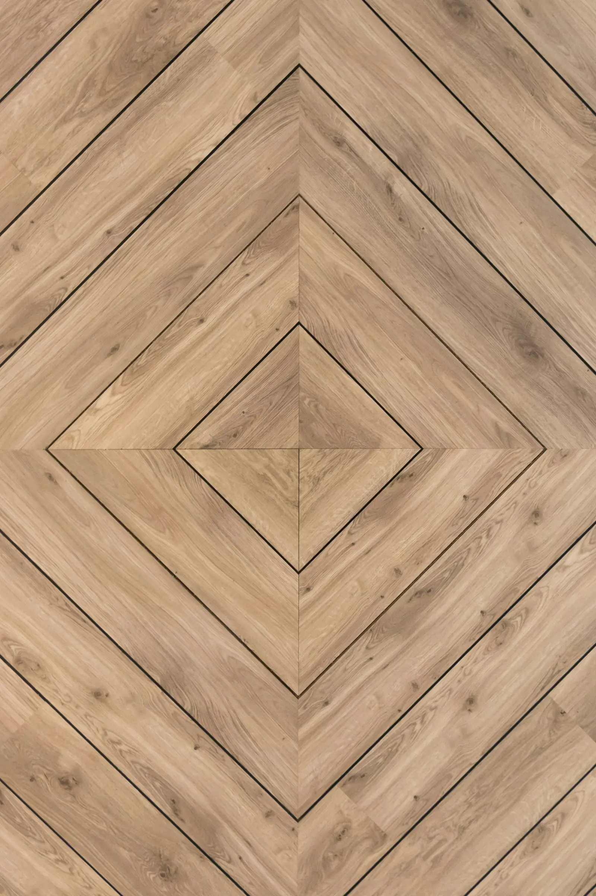

Parkett & Designböden
Verlegung, Sanierung und Oberflächenbehandlung von Parkett und Designbodenbelägen – inklusive zertifizierter Lösungen für Parkett im Bad.
Vom Neuboden bis zur Sanierung
Ob Neuverlegung, Aufarbeitung eines bestehenden Parketts oder die Sanierung schwieriger Untergründe – wir kennen die technischen Anforderungen ebenso wie die gestalterischen Möglichkeiten von Holz und Designbelag.
- Parkettverlegung und -sanierung
- Oberflächenbehandlung, auch farbig bzw. pigmentiert geölt
- Zertifizierte Lösungen für Parkett im Bad
- Staubarme bzw. staubfreie Schleif- und Fräsarbeiten
- Sanierung schwieriger Untergründe, Entfernung alter Kleberreste

Parkett im Bad
Nach eigener Darstellung des Betriebs zertifiziert für Parkett im Feuchtraum – eine Spezialisierung, die weit über Standardverlegung hinausgeht.
Auch als Teil größerer Bodenprojekte
Für Industrie- und Gewerbeflächen mit technisch anspruchsvollerem Sanierungsbedarf – etwa nach Wasserschaden oder bei Estrichproblemen – finden Sie unsere Leistungen gebündelt unter Bodensanierung für Gewerbe.
Fragen zu Parkett & Designböden
Kann mein vorhandenes Parkett aufgearbeitet statt ersetzt werden?
In vielen Fällen ja. Nach einer Begutachtung vor Ort schlagen wir vor, ob Abschleifen und neue Oberflächenbehandlung ausreichen oder eine Teil-/Neuverlegung sinnvoller ist.
Ist staubfreies Schleifen bei bewohnten Räumen möglich?
Ja, wir setzen staubarme bzw. staubfreie Schleif- und Frästechnik ein, um die Belastung für Bewohnerinnen und Bewohner gering zu halten.
Was passiert bei altem, stark haftendem Kleber im Untergrund?
Die Entfernung alter Kleberreste und die Sanierung schwieriger Untergründe gehören zu unserem Kerngeschäft – wir prüfen den Untergrund vor Angebotserstellung.
Ihr Boden braucht fachliche Einschätzung?
Schildern Sie uns Zustand und Ziel – wir melden uns mit einer ersten Einschätzung.
Bodenprojekt anfragen